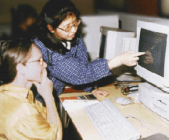

4. Computers and Art
(three paragraphs)

CL: So CADRE students will explore many aspects of technology as art media, using the computer as the main tool. How do you approach making art with the computer -- what is the actual medium manipulated by the artist?
SLAYTON: To begin with, the computer's not a tool -- it's more than a tool. It's like no other contraption in the world! Tools in the traditional sense extend your prosthetic domain, your physical control over the environment. Whether it's a shovel or a hammer or a telescope or whatever. But computers don't have a purpose until it has been described to them. A lot of people call them universal machines, since they can be transformed into any machine that you want them to behave like.
CL: You can turn it into a hammer if you want to?
SLAYTON: You could. And we've done that...! Or other things -- like performance. Computers are everywhere. They're just buried in every interaction that we undertake during the course of the day. They're pretty transparent, actually.
People get it in their mind that a computer is only about this thing that sits on a table and puts an image on a screen. They miss the entire potential of what's possible. An artist working with the computer has toshould see it as a conceptual machine. It's a conceptual medium, and you have to work with language to make it become what you want it to become. If there's a medium in the computer it's language, not hardware.
CL: Do you think you could become a master of this medium?
SLAYTON: Oh yes. It might take years, but a collaborative model like DoWhatDo has the potential of becoming a whole art movement with all the dimensions of success or failure!
You know, like Dada Ð DoWhatDo... It should be in everyone's vocabulary and part of art everywhere, like theory and criticism. I'd like to see it become mainstream. It would make things so much more interesting. Otherwise life is all too predictable.